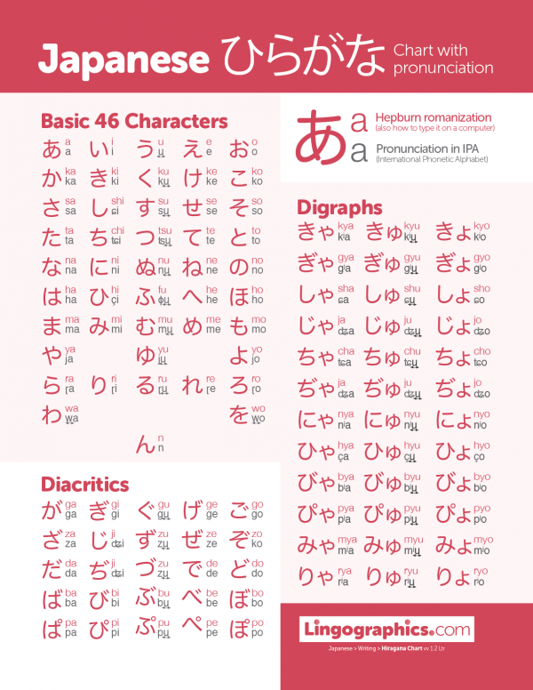

Hiragana is one of the fundamental scripts of the Japanese language, essential for reading and writing.
This
phonetic system consists of 46 characters, each representing a distinct syllable, and serves as a vital
tool for
beginners.

A list of all hiragana characters
Why Learn Hiragana?
Foundational Skill: Hiragana is used for native Japanese words and grammatical elements,
making it
crucial for constructing sentences and understanding basic language structure.
Pronunciation Aid: As a phonetic script, hiragana helps learners pronounce words accurately,
providing a
stepping stone to mastering the language.
Reading Accessibility: Once you know hiragana, you can read simple texts, children's books,
and
menus, enhancing your overall learning experience.
Tips for Learning Hiragana
Mnemonics: Create memorable associations for each character. For instance, the character た
(ta) might
remind you of a "ta-ta" sound, making it easier to recall.
Flashcards: Use flashcards to practice regularly. Write the character on one side and its
pronunciation
on the other, testing yourself frequently.
Writing Practice: Consistent writing helps reinforce memory. Focus on proper stroke order,
which is
important for developing good handwriting.
Engaging Resources: Use children’s books or educational games that utilize hiragana. This
makes
learning
enjoyable and contextually relevant.
Apps and Online Tools: Take advantage of language learning apps and websites that offer
interactive
exercises and quizzes specifically for hiragana practice.
Learning hiragana is an exciting first step in your journey to mastering Japanese. With dedication and
the right
strategies, you’ll quickly gain confidence in reading and writing, opening up new opportunities to
explore the
language and its rich culture. Happy learning!